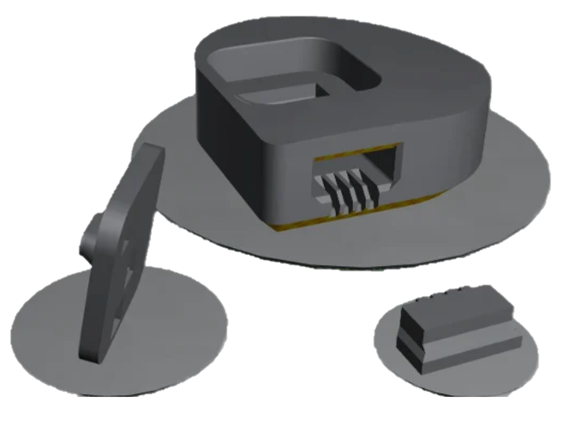
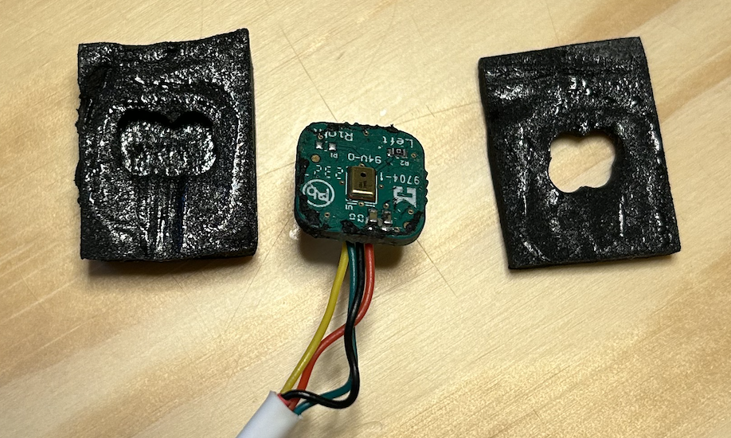
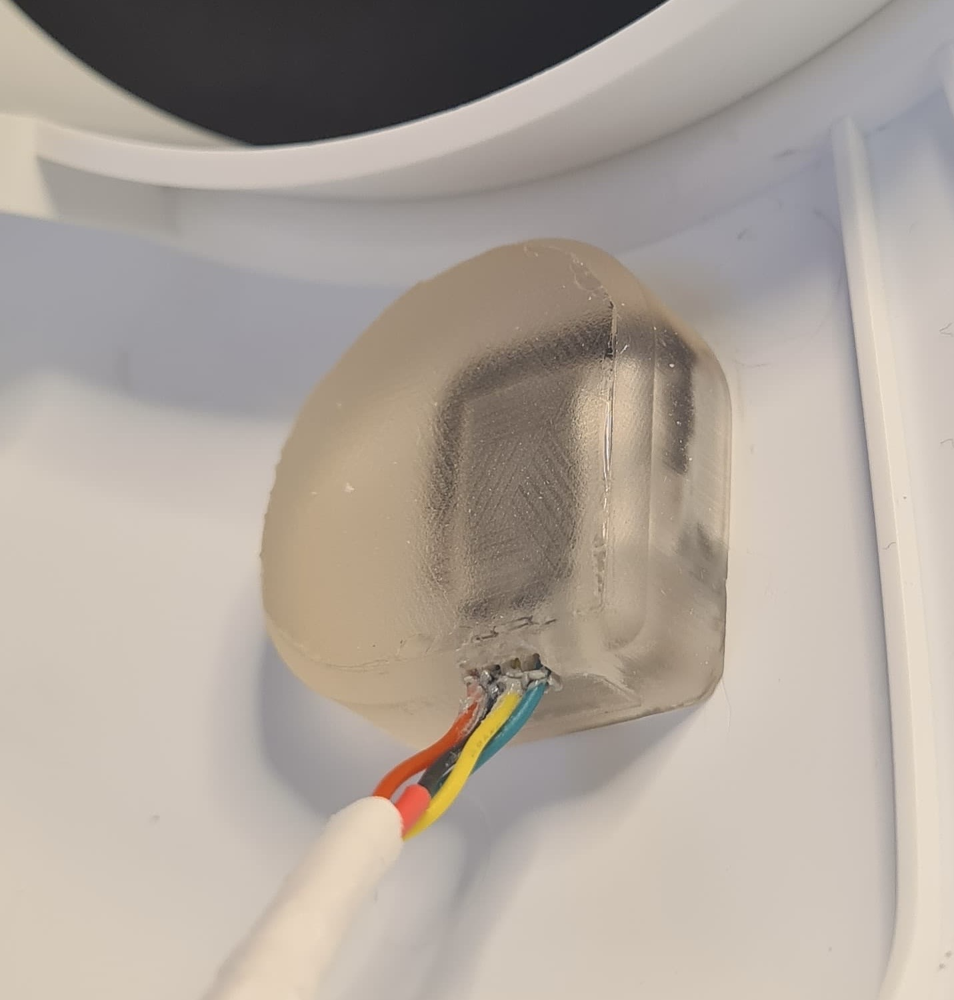
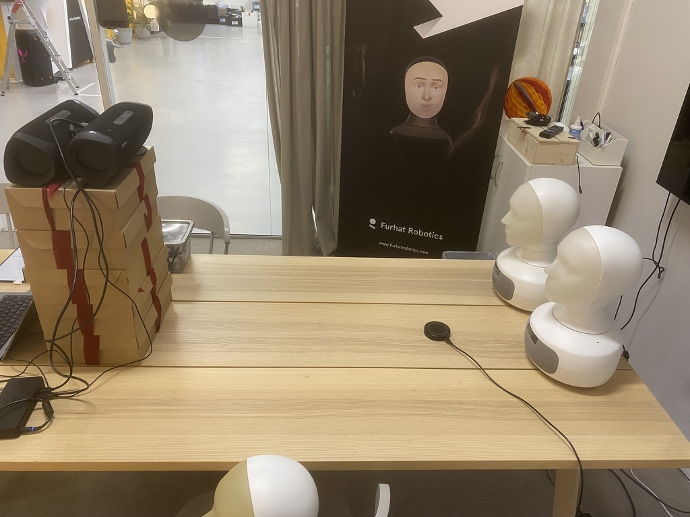

Furhat’s audio system
Redesigning Furhat’s microphone integration and measuring its effect on speech recognition.
- Project period
- 11/2025 – 03/2026 · 5 mos
- Context
- Bachelor’s thesis at Furhat Robotics and TH Köln
- Status
- Prototype built and evaluated
- My contribution
- Mechanical design, prototyping, automated evaluation and statistical analysis
Mean word error rate: 18.3% → 16.6% across 480 paired runs. A 9.3% relative reduction under the tested conditions.


Context and my role
For my nine-week bachelor’s thesis at Furhat Robotics, I investigated whether mechanical changes could improve recognition without changing the microphone PCB, system connection, moulded shell or external sound ports. I carried out the literature review, expert consultation, mechanical design, prototyping, automated testing and statistical analysis.
The internal recording interface was mono, so I developed and tested one side. The project period (11/2025 – 03/2026 · 5 mos) includes preparation before the formal nine-week thesis period (02/2026 – 03/2026 · 2 mos), with submission in 03/2026. The broader thesis-related employment phase was 10/2025 – 04/2026 · 7 mos.
Define the sound path and attach the mount to the shell
The original foam enclosure formed a cavity in front of the microphone and could obstruct its inlet. Its support was connected to the loudspeaker housing. I attached the redesign to the shell and introduced a short, aligned acoustic channel to reduce leakage and unwanted coupling.
Mount A formed the channel and used a thin silicone seal at the shell. Mount B enclosed the PCB in compressed closed-cell foam; a plug sealed the opening and supported cable routing. Adhesive secured the final assembly. Silicone casting was tried but abandoned after removal and thin-wall failures.


Print the channel within the available clearance
Resin printing reproduced the small acoustic features more successfully than the available FDM printer. Thin walls broke or failed to print, limiting the final channel to 1.6 mm diameter and 3.1 mm length. Printing at an inclination distorted the cross-section, so I adjusted the CAD opening to obtain an approximately circular printed channel.
Clearance beside the loudspeaker also constrained PCB orientation. Returning the wiring towards its original downward orientation provided space while retaining channel alignment. The mount was designed for compliant support, but the rigid assembly was not completely decoupled.
Automate a paired speech-recognition comparison
I compared original internal implementation A, redesigned implementation B and external ReSpeaker reference R. A and B recorded simultaneously through Google Cloud Speech-to-Text via Furhat’s WebSocket interface. The stimulus was one male British recording of the ten sentences in Harvard Sentences List 1, repeated at signal-to-noise ratios (SNR) of 20, 15, 10 and 5 dB.
SNR 20 used no added noise; the other conditions used a fixed babble-noise segment. Playback, listening requests, transcript collection and condition logging were automated. There were 120 paired repetitions per condition, totalling 480 paired A/B observations of the same speech material.

Results and limitations
Mean word error rate (WER, lower is better) fell from 18.3% to 16.6%. This is 1.7 percentage points, or a 9.3% relative reduction. My one-sided paired t-tests showed an improvement at p < 0.05 in all four conditions.
| SNR | Original A | Redesign B |
|---|---|---|
| 20 dB | 21.4% | 17.2% |
| 15 dB | 16.6% | 15.5% |
| 10 dB | 16.7% | 16.1% |
| 5 dB | 18.8% | 17.8% |
| All four conditions | 18.3% | 16.6% |
The changes were evaluated together, so their separate causal effects were not established. One room, one speech recording and a limited set of conditions constrain transferability. The test measured transcript errors rather than real conversational success.
ReSpeaker yielded mean WER of 9.5% at SNR 5, with only 60 usable runs and none in the other conditions. It was approximately 30 cm closer to the source and used a different signal chain, limiting any comparison of mounting geometry. Production adoption was outside the scope of the thesis.
Statistical methods and incomplete reference data
The one-sided paired t-test p-values for B versus A were < 0.001 at SNR 20 and 15, 0.036 at SNR 10, 0.004 at SNR 5, and < 0.001 overall. Reference comparisons used the matching 60-run A/B subset; its means should not be inferred from the full 120-run means above.
I suspected WebSocket transcript-boundary artefacts. The simplified channel model placed the prototype’s fundamental resonance above 20 kHz; this was a model estimate, not a measured frequency response. Internal-noise isolation had only qualitative support. Microphones were muted while Furhat spoke, so recognition during robot speech and acoustic echo cancellation were not evaluated.